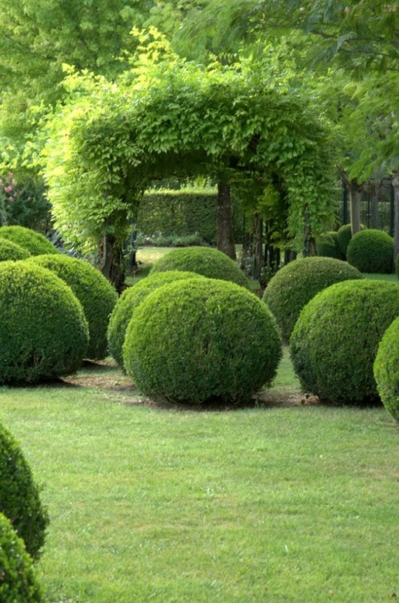
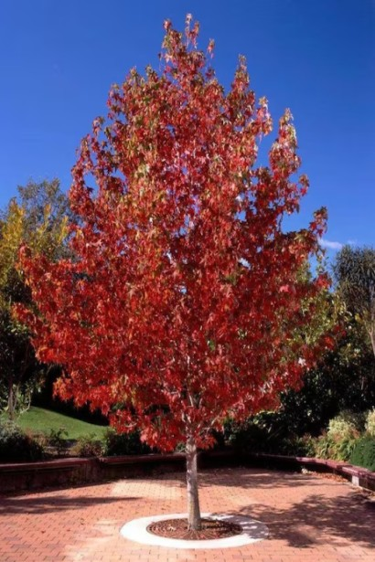

Каталог рослин

Ялівець горизонтальний Блю Чіп / Блу Чіп (штамб)
Невисокий, дуже поширений в Україні, повзучий ялівець блакитного кольору, із середньою швидкістю росту.
₴2400
Сосна густоквіткова Окулус Драконіс (Око Дракона) штамб
Сосна густоквіткова Окулус Драконіс, з нерегулярною конічною формою крони та цікавим забарвленням хвої, вважається однією з найкрасивіших сортів сосон.
₴4780

Самшит вічнозелений Куля Buxus sempervirens Ball
Вічнозелений високий густий кущ, в природі іноді невелике дерево з коротким кривим стовбуром.
₴1100
Платан кленолистий (морозостійкий)
Струнке дерево викликає захоплення своєю величчю густії крони, унікальним світло-плямистим забарвленням стовбура і оригінальними кулястими плодами, що висять на дереві до весни.
₴900
Туя західна Брабант (для живоплотів)
Безумовно найпопулярніша в центральній Європі серед туй, що використовуються для посадки живоплоту.
₴500

Ліквідамбар смолоносний Ворплесдон
Листяне дерево, широко відоме в Європі своїм чудовим яскравим різнокольоровим забарвленням листя восени.
₴1670